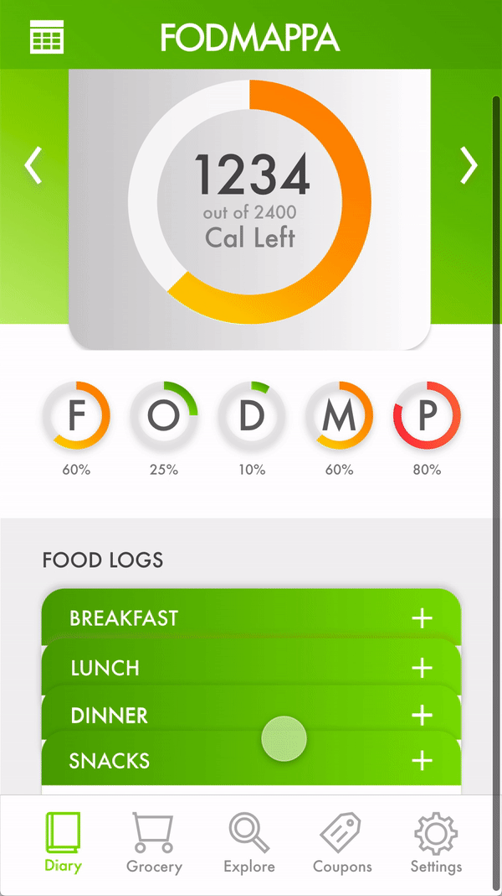

FODMAPPA Mobile App
Challenge
Had to create the branding and interface design for a client's personal food diary mobile app called FODMAPPA for people trying to manage IBS symptoms with a FODMAP diet. Features include a food diary, grocery lists, food information look up, food coupons, and more.
Brand Identity
First looked at the types of designs that the client liked and then brainstormed and sketched different ways to convey the brand. After discussing the design options that were ideated, selected and developed a logo digitally in Adobe Illustrator. Then created a style guide for the brand.
Research
Analyzed the UI design of several competing food diary apps on the IOS app store such as Noom, Bowelle, Oshi, Cara, and Suggestic. Mainly focused and critiqued Suggestic's design to form direction for the design direction of FODMAPPA. Then sketched wireframes by hand based off of the design direction.

App Design
After receiving feedback on the wireframes, created high fidelity mockups in Adobe Photoshop and Illustrator. App contains design elements such as as intake trackers, FODMPA level indicators, and buttons. Also utilized Adobe XD to prototype a couple of functions and create a sample mobile walkthrough
